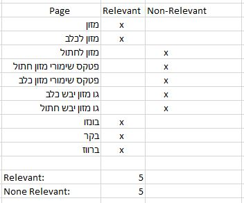

Information retreavel project, collecting information from a pet store called Anipet:visit the store you could also View on GitHub
There are several factors that can improve the run time:
The three pages are:
We perform our page rank with an online stimulator which you can find at: Page rank tool
User1
User 1 was only intersted in products for dogs with buy option of atleast 3 kilograms , and only for dogs and in bonzo type, therefore only 3 out of the 10 pages were relevant to him.
Optimized query:We can sort the results by weight.
User2
User 2 was more open to types and weight, therefore 5 out of the 10 were relevant to him.
Optimized query:sort the results by types